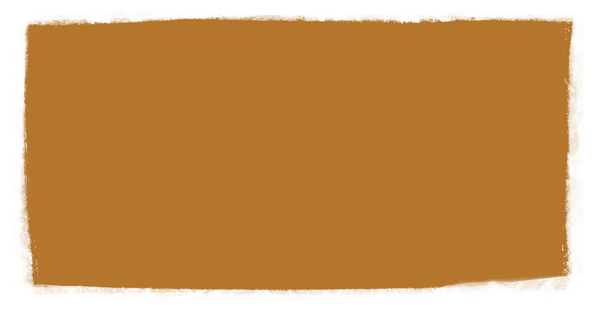

 kihjdgbfiwebfj jf iufiseuf iesufiesfu iseeif esiufgseiu iufif uie iug iseufgsif guirjfguizrg uigiurgf ui giuzg iugf uigfuiagui giujrfgikrghkisjf giksuej seikfh ikujd fvikgriifisfd gvwess dhgfsr ih gikeg rsg isd gfr ifvr sd f greisfr gdg i fserdg igfer wigfgr wir fgig rfwwef riw efrifw giuf ifivsd fei wf eifei iiiefw iwef giuwei ew iefbf weef kwe fkjhe f ij ki ikifj fi jo ljwkdhv ifej nhdfgv sjk hgf j hjgs kisj jhsfd kijdsf jhsd jkhs jhdsf h fjkhf h dfikv wijvkij wdk jbwej wkqjbc jw dk